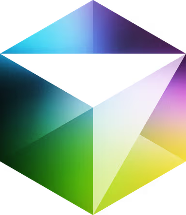
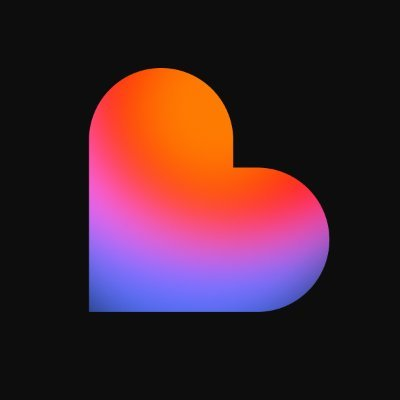
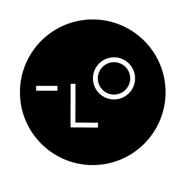
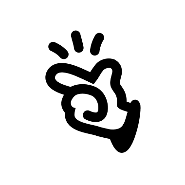
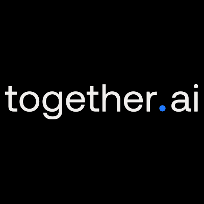

Anthropic
anthropic.com
Anthropic, founded in 2021 by former OpenAI researchers Dario Amodei, Daniela Amodei, and others, is a San Francisco-based AI company focused on safe and interpretable AI systems. Its flagship model, Claude, competes with ChatGPT, emphasizing ethical AI deployment. Valued at $18.4 billion in 2024 with $750 million raised, Anthropic serves enterprises and researchers, prioritizing safety and alignment in AI development for global impact.
Foundation model
Claude
Agent
Coding
Browserbase
browserbase.com
Browserbase, founded in 2023 and based in San Francisco, is a cloud platform specializing in scalable headless browser infrastructure for web automation and AI agents. It provides APIs and SDKs for seamless integration with frameworks like Playwright, Puppeteer, and its proprietary Stagehand, enabling tasks like web scraping, automated testing, and form submissions. With $40 million raised in a Series B round in 2025 at a $150 million valuation, Browserbase serves developers and enterprises with secure, high-performance browser automation solutions.
Infra

Cursor
cursor.com
Cursor, founded in 2022 and based in San Francisco, is an AI-powered code editor built on Visual Studio Code, designed for developers seeking precision and control. Leveraging Anthropic’s Claude 3.5 Sonnet, it offers advanced code completion, debugging, and multi-file editing. With a valuation of $400 million and $65 million in annual recurring revenue as of November 2024, Cursor serves professional developers and teams, enhancing productivity with seamless IDE integrations.
Agent
Coding

DeepSeek
deepseek.com
DeepSeek, founded in July 2023 by Liang Wenfeng, is a Hangzhou-based Chinese AI company specializing in large language models (LLMs). Backed by High-Flyer, a quantitative hedge fund, it develops cost-efficient, open-source models like DeepSeek-R1 and V3, rivaling OpenAI’s GPT-4. With a focus on research over commercialization, DeepSeek serves global users through its chatbot, API, and mobile app, achieving significant adoption and sparking price wars in the AI industry.
Foundation model
Genspark
genspark.ai
Genspark, founded in 2023 by former Baidu executives Eric Jing and Kay Zhu, is a Palo Alto-based AI agent engine focused on delivering real-time, synthesized results through custom “Sparkpages.” Backed by $160 million in funding, it offers a user-friendly platform for tasks like research, content creation, and multimedia generation. With over 2 million monthly active users by mid-2024, Genspark’s Mixture-of-Agents system and features like AI phone calls position it as a leader in accessible, autonomous AI solutions.
Agent

Granola
granola.ai
Granola, founded in 2023 by Chris Pedregal and Sam Stephenson, is a London-based AI-powered notepad app designed for professionals with back-to-back meetings. It transcribes audio directly from a Mac, blending user notes with AI-enhanced summaries to create polished, shareable meeting records without intrusive bots. With $63 million raised, including a $20 million Series A in 2024, Granola integrates with platforms like Zoom and Slack, serving thousands of users with its intuitive, privacy-focused note-taking solution.
AI App
Productivity

Groq
groq.com
Groq, founded in 2016 by Jonathan Ross and based in Mountain View, California, is an AI hardware and software company specializing in high-performance AI inference. Its proprietary Language Processing Unit (LPU) accelerates large language model (LLM) workloads, offering up to 10x faster inference than traditional GPUs. With $1 billion raised at a $2.8 billion valuation as of August 2025, Groq powers enterprise and developer applications, delivering cost-efficient, low-latency AI solutions globally.
Infra
Harvey
harvey.ai
Harvey AI, founded in 2022, is a generative AI platform revolutionizing the legal industry. Headquartered in San Francisco, it empowers law firms, professional services, and Fortune 500 companies with custom AI models for tasks like legal research, contract analysis, and due diligence. With $806 million raised, a $5 billion valuation, and $100 million in annual recurring revenue as of August 2025, Harvey serves 235 customers across 42 countries, driving efficiency and innovation in high-stakes workflows.
Agent
Legal

Lovable
lovable.ai
Lovable, launched in June 2023 as GPT Engineer and rebranded in November 2024, is a Sweden-based AI app builder focused on no-code development for non-technical users. It generates full-stack web applications via natural language prompts, integrating with Supabase and GitHub. With $7 million in annual recurring revenue and 140,000 users by late 2024, Lovable’s intuitive interface and rapid prototyping capabilities empower entrepreneurs and startups.
Agent
Coding

Lovart
lovart.ai
Lovart AI, launched in 2025 and based in San Francisco, is the world’s first AI design agent, transforming text prompts into professional-grade visual designs. Co-founded by Haofan Wang, it integrates advanced AI models like GPT-4o, Flux, and Stable Diffusion to create assets for branding, storyboards, and multimedia. With over 100,000 users across 70+ countries within days of its launch, Lovart’s infinite canvas and natural language interface streamline creative workflows for designers and businesses.
Agent
Design

Manus
manus.im
Manus AI, launched in 2025 by Singapore-based startup Monica (also known as Butterfly Effect), is an autonomous AI agent platform designed for complex, multi-step tasks. Built to operate with minimal user input, it excels in enterprise-grade workflows like data analysis, content generation, and system integration. With $75 million raised at a $500 million valuation, Manus serves global users, leveraging integrations with platforms like Hugging Face and advanced models like Claude for versatile automation.
Agent

Together AI
together.ai
Together AI, founded in 2022, is a San Francisco-based AI company focused on accelerating open-source AI development and deployment. It provides a cloud platform for building, fine-tuning, and scaling generative AI models, serving developers, startups, and enterprises. With $225 million raised by 2024 and a valuation of $1.25 billion, Together AI supports a wide range of applications, from LLMs to multimodal models, emphasizing accessibility and collaboration in AI innovation.
Infra